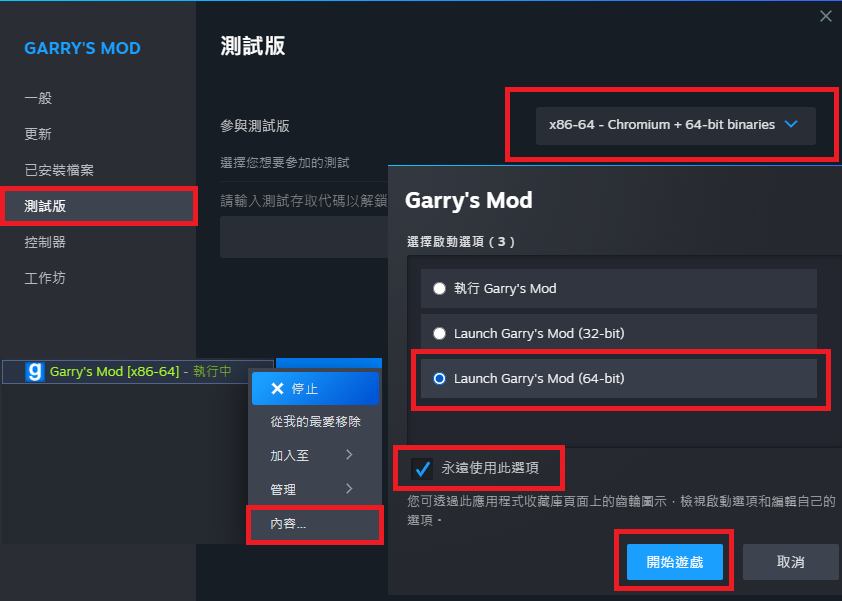

Garry's Mod 64Bit
將Garry's Mod更改為64位元，能有效的大幅提升效能。

掛載CS:S檔案
TTT大多使用CS:S模組，如果Garry's Mod沒有掛載的話，地圖或物件可能會出現ERROR或破圖，所以有CS:S的玩家記得安裝並啟用。

若沒有CS:S的人可以解壓縮這個檔案放在GarrysMod路徑下。
訂閱全部Steam工作坊，最下面還有其他4個連結收藏也全部都要。
先前有訂閱此連結的地圖可以取消訂閱，檔案大小太大、遊玩性不佳。
如果有訂閱Homicide遊戲模式也要將其禁用，會影響第三人稱Deagle錯位問題。
遊戲設定將動態模糊開啟，不然警犬的放大鏡會看起來不正常。
第一次遊玩可以按下［F1］查看有哪些個人化設定。